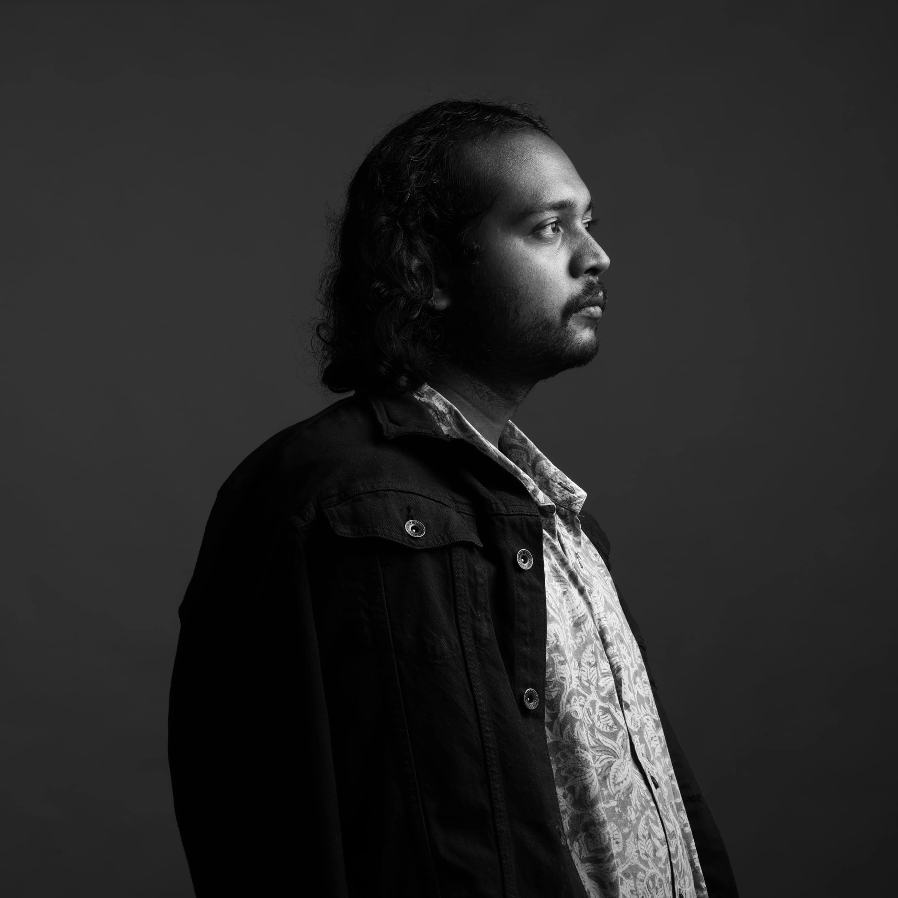

National Institute of Design, Gandhinagar
M.Des. in Photography Design
2025 - 2027
Artist statement
Dhawal is an Indian photographer, visual researcher, and photography designer based in India. He is currently pursuing a Master of Design (M.Des.) in Photography Design at the National Institute of Design (NID), Gandhinagar, after completing a Bachelor of Visual Arts (B.V.A.) in Art History and Aesthetics from The Maharaja Sayajirao University of Baroda.
His interdisciplinary practice brings together photography, visual culture, archival research, and contemporary image-making. Working across documentary photography, editorial photography, artist books, exhibitions, and research-based visual projects, Dhawal explores themes of memory, landscape, identity, violence, home, displacement, and the relationship between people and place.
His work often combines photographs, archival materials, and text to investigate how personal and collective histories are embedded within everyday environments.
Alongside his photographic practice, Dhawal has worked as an art writer, researcher, curator, and designer, contributing to publications, exhibitions, and independent cultural initiatives.
His research interests include photography theory, visual anthropology, archives, contemporary art, material culture, and the visual histories of Northeast India. His work has been exhibited, published, and presented through academic and independent platforms, reflecting a practice that moves fluidly between artistic production and critical inquiry.

National Institute of Design, Gandhinagar
M.Des. in Photography Design
2025 - 2027
Maharaja Sayajirao University of Baroda, Vadodara
B.V.A. in Art History & Aesthetics
2020 - 2024
Dissertation: The Art of Uprising: Aesthetics of a 'Disturbed' Assam in the 1980s
Assistant to an Australia-based Artist
2022 - 2023
Content Writer, LithoLekha Printmaking Studio
January 2024 - January 2025
Art Writer, The Art Documentor Project
June 2024 - August 2024
Founder, The Grey Artists Collective
July 2024 - Present